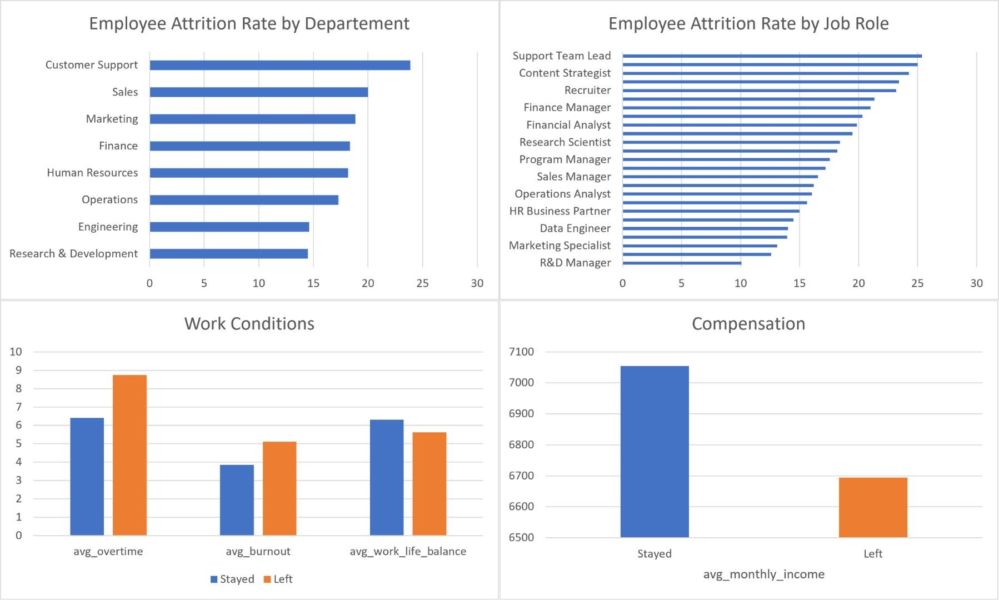

Employee Attrition Analysis
Analyzed employee data using SQL to identify factors associated with employee attrition and provide insights that could support employee retention.
Dataset
4902 Employees
Tools
MySQL
Excel
Focus
Employee Attrition
Project Objective
The objective of this project was to analyze employee data and identify factors associated with employee attrition. The analysis focused on understanding differences between employees who left and those who stayed.
Data Analysis
The analysis was conducted using MySQL to explore employee characteristics, workload, compensation, and work-related factors associated with attrition.
01. Data Validation and Preparation
Checked missing values, duplicates, inconsistencies, and anomalies. Cleaned the data and ensured consistent data types, formats, and values.
02. Attrition Analysis
Calculated the overall attrition rate and compared employees who stayed and left.
03. Employee Segmentation
Analyzed attrition by department and job role to identify higher-risk groups.
04. Factor Analysis
Compared income, overtime, burnout, commute time, and work-life balance.

Key Findings
17.91%
Attrition Rate
25.37%
Attrition rate for Customer Support Team Lead.
36.35%
Higher Overtime Among Employees Who Left
Key Insights
- Overtime showed a notable difference between employees who left and those who stayed.
- Burnout was also one of the factors associated with employee attrition.
- Certain customer support roles showed relatively high attrition rates.
Conclusion
The analysis suggests that workload-related factors, particularly overtime and burnout, may be important areas to consider when developing employee retention strategies.